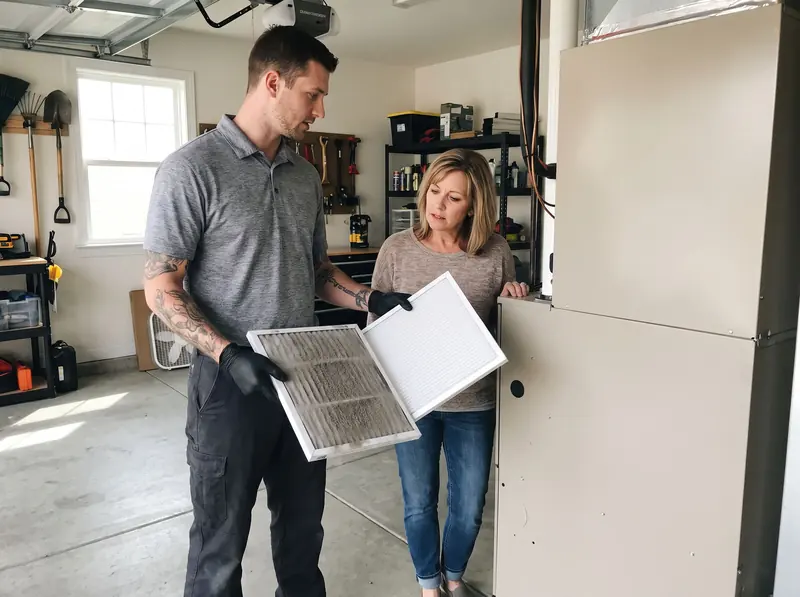

Trusted Atlantic City HVAC Service
Comfort in Atlantic City shouldn't be seasonal. West New York HVAC keeps local homes and businesses comfortable year-round with responsive, experienced heating and cooling service, from same-day AC repair to right-sized system replacements. We've worked in nearly every neighborhood in the area, which means we've seen how these systems fail locally and we arrive prepared, with the common failure parts already on board. Call (201) 257-9178 and we'll get the fix started.

Heating and Air Conditioning Service Across Atlantic City
Whether you own a condo, a small apartment building, or a commercial space in town, we have the know-how and equipment to handle every heating and cooling need. Our technicians bring years of hands-on experience with central air conditioners, gas and electric furnaces, heat pumps, and ductless mini-splits throughout the area, and we pay close attention to the climate patterns, housing stock, and local code requirements that shape how systems perform here.
A normal week for our residential technicians might include capacitor and contactor replacements, flame sensor cleanings, refrigerant leak searches, blower motor swaps, and at least one full system replacement or ductless install. When we do replace equipment, we size it with a room-by-room load calculation instead of guessing. Right-sized equipment keeps rooms even, keeps utility bills reasonable, and steers clear of the short-cycling that kills compressors early. Beyond repairs and replacements, we offer seasonal tune-ups that clean coils, confirm the refrigerant charge, test safety controls, and measure static pressure, the best single step for a longer-lasting system.
Local businesses get the same care. A hot dining room or a freezing office costs real money, so our commercial technicians focus on fast diagnosis and keep high-failure parts on board for rooftop units, split systems, and ventilation equipment. Property managers, restaurant owners, and retailers can ask us to work around their business hours whenever possible.
Fast HVAC Response in Atlantic City
Call us about a problem and a real person answers, not a phone tree. Most calls are scheduled within a day, and true emergencies, an AC that quits in a heat wave or a furnace that fails on a freezing night, jump to the top of the schedule. Scheduling stays flexible so you're not left waiting for a callback.
The emergency calls we answer usually follow a pattern. On the cooling side, it's warm air from the vents, an outdoor unit that hums without starting, or an evaporator coil iced over. On the heating side, it's a furnace that lights and then shuts down. And any time of year, it's breakers that trip every cycle, plugged condensate drains overflowing into the furnace cabinet, and thermostats that have quit. Since our trucks are stocked with capacitors, contactors, igniters, flame sensors, universal control boards, and fittings, the majority of these calls get fixed on the first trip, at a price you approve before we start.
A few minutes of caution while you wait for us can prevent a much larger repair. An iced-over AC should be shut off at the thermostat with the fan set to "on", which lets the coil thaw faster. Running it frozen risks an overflowing drain pan and a damaged compressor. A short-cycling furnace, or any burning smell, means it's time to shut the unit off at its service switch and call us immediately.
How Atlantic City Homeowners Can Extend HVAC Life
Routine maintenance makes all the difference between a system that runs for years and one that breaks down in the middle of a heat wave. Our advice for homeowners is a short list: fresh filters every one to three months, at least two feet of open space around the outdoor condenser, a gentle rinse each spring for the condenser coil, and two professional tune-ups a year, so small issues get caught early.
The age of your equipment matters just as much. With regular service, central air typically lasts 12 to 15 years, a furnace 15 to 20, and a heat pump 10 to 15. Once a system passes that range and starts acting up, like rising energy bills, rooms that won't reach the setpoint, or repeat service calls, it's time to plan a replacement. Replacing on your own schedule costs less and is far less stressful than an emergency swap during the worst heat wave of summer.
The sooner you call about a comfort problem, the smaller the repair tends to be. A weak capacitor costs little to replace, yet the same part, ignored through a full season, can ruin the compressor and turn a simple fix into a full system replacement. Save our number on your phone today so help is one call away the moment something seems off in your home. A quick call saves time, money, and miserable nights.
Comfort Challenges Atlantic City Homeowners Face
HVAC systems in this area face a familiar set of problems. Hard-running summers push compressors and capacitors to their limits, and humidity and airborne grit slowly foul outdoor condenser coils, cutting efficiency years before the equipment should show its age. Clogged filters quietly choke off airflow, freezing evaporator coils in summer and overheating furnace heat exchangers in winter, a slow kind of damage most homeowners never see coming.
Our technicians also run into the full range of component failures in local homes: weak capacitors that leave the condenser humming without starting, contactors with pitted points, cracked igniters and dirty flame sensors that lock furnaces out on cold mornings, refrigerant leaks that turn into long lukewarm afternoons, and blower motors worn down by years of restricted airflow. The area's older housing stock adds its own layer, undersized returns, leaky or crushed ductwork, and additions that no duct run ever reached.
Every one of these problems is fixable, and most are much less expensive when caught early. If your system is doing anything unusual, new noises, weak airflow, rooms that won't hold temperature, bills creeping upward, a quick diagnostic visit from our team catches the small problem before it becomes a costly breakdown. Give us a call at (201) 257-9178 to set up a visit.
Your Go-To Heating & Air Team
Living and working here gives us firsthand knowledge of what local homes need to stay comfortable. From iced-over coils to furnaces flashing error codes, our technicians are equipped to handle it all.
HVAC Trouble at Home?
Reach us now and get an HVAC technician headed to your property today.
Call (201) 257-9178 TodayWhat We Offer
Our local team handles heating and cooling systems of every type for both homeowners and businesses, including:
Want a Price Quote?
One call connects you with our team and a clear plan for your comfort issue.
Call (201) 257-9178 TodayWhy Atlantic City Homeowners Trust Us
What homeowners here get with West New York HVAC is simple: fast scheduling, honest diagnosis, and workmanship that holds up. We answer quickly, arrive prepared, and fix causes rather than symptoms, checking the airflow, charge, and electrical conditions that killed the failed part in the first place. Pricing is agreed up front and doesn't move. Whether it's a midnight furnace failure or a planned system upgrade, the job is done right on the first visit.

HVAC FAQ for Local Residents
Other Communities Nearby
Beyond this community, we cover the surrounding towns with the same fast service.